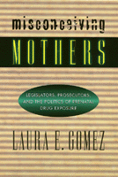

<body bgcolor="#FFFFFF" text="#000000" link="#0000FF" vlink="#CC0000" alink="#CC0000"><center><hr width="350" size="1" align="center" noshade>How public policy about reproduction and crime is made<hr width="350" size="1" align="center" noshade><p><a href="https://cdcshoppingcart.uchicago.edu/Cart/ChicagoBook.aspx?ISBN=9781566395571&&PRESS=temple" target="_top">Buy this book!</a> | <a href="https://cdcshoppingcart.uchicago.edu/Cart/Cart.aspx?PRESS=temple" target="_top">View Cart</a> | <a href="https://cdcshoppingcart.uchicago.edu/Cart/Cart.aspx?PRESS=temple" target="_top">Check Out</a></p><p></p></center><!--none//--><h1>Misconceiving Mothers</h1>
<H2>Legislators, Prosecutors, and the Politics of Prenatal Drug Exposure</H2>
<h3>Laura E. G�mez</h3>
<P>cloth 1-56639-557-7 $80.50, Dec 97, <FONT COLOR=#990033>Available</FONT>
<br>paper 1-56639-558-5 $31.95, Dec 97, <FONT COLOR=#990033>Available</FONT>
<BR> 256 pp
5.5x8.25
</P><BLOCKQUOTE><I>"This book is a case study of how public policy about reproduction and crime is made. An interesting and readable contribution to the social problems literature and should be of particular value to those interested in the social regulation of individual behavior."</I>
<br>&#151<b><I>Contemporary Sociology</I></b><I></I></BLOCKQUOTE>
<p>A tiny African-American baby lies in a hospital incubator, tubes protruding from his nostrils, head, and limbs. "He couldn't take the hit," the caption warns. "If you're pregnant, don't take drugs." Ten years earlier, this billboard would have been largely unintelligible to many of us. But when it appeared in 1991, it immediately conjured up several powerful images: the helpless infant himself; his unseen environment, a newborn intensive care unit filled with babies crying inconsolably; and the mother who did this -- crack-addicted and unrepentant.
<p><i>Misconceiving Mothers</i> is a case study of how public policy about reproduction and crime is made. Laura E. G&oacute;mez uses secondary research and first-hand interviews with legislators and prosecutors to examine attitudes toward the criminalization and/or medicalization of drug use during pregnancy by the legislature and criminal justice system in California. She traces how an initial tendency toward criminalization gave way to a trend toward seeing the problem of "crack babies" as an issue of social welfare and public health.
<p>It is no surprise that in an atmosphere of mother-blaming, particularly targeted at poor women and women of color, "crack babies" so easily captured the American popular imagination in the late 1980s. What is surprising is the way prenatal drug exposure came to be institutionalized in the state apparatus. G&oacute;mez attributes this circumstance to four interrelated causes: the gendered nature of the social problem; the recasting of the problem as fundamentally "medical" rather than "criminal"; the dynamic nature of the process of institutionalization; and the specific features of the legal institutions -- that is, the legislature and prosecutors' offices -- that became prominent in the case.
<p>At one level <i>Misconceiving Mothers</i> tells the story of a particular problem at a particular time and place how the California legislature and district attorneys grappled with pregnant women's drug use in the late 1980s and early 1990s. At another level, the book tells a more general story about the political nature of contemporary social problems. The story it tells is political not just because it deals with the character of political institutions but because the process itself and the nature of the claims-making concern the power to control the allocation of state resources.
<p>A number of studies have looked at how the initial criminalization of social problems takes place. <i>Misconceiving Mothers</i> looks at the process by which a criminalized social problem is institutionalized through the attitudes and policies of elite decision-makers.
<BR>&nbsp;<h2>Reviews</h2>
<p><i>"The clear strength of this book is found in G�mez' analysis of this specific issue as a valid policy concern. Her examination of the arguments surrounding the criminalization of prenatal drug exposure is thorough and her evidence compelling. It is for her insights surrounding the political, ideological, and philosophical tensions involved in the development and implementation of this policy that this book is worth reading."</i>
<br>&#151<b><i>Law & Politics Book Review</i></b>
<p><i>"Through a series of interviews and empirical research methods, G�mez exposes the misconceptions that underlie justifications for criminalization through the "life cycle" of this particular social problem."</i>
<br>&#151<b><i>Law & Society Review</i></b>
<BR>&nbsp;<h2>Contents</h2><P>
<p>Acknowledgments
<br>Introduction
<br>1. Discovering "Crack Babies": The News Media and Medical Science
<br>2. Lawmaking and the Making of a Social Problem
<br>3. The Politics of Pregnancy: Institutionalizing Prenatal Drug Exposure
<br>4. Claims-making in the Criminal Justice System: Prosecutors on "Crack Babies"
<br>5. Making Sense of the Gap Between Prosecutors' Rhetoric and Their Responses
<br>Conclusion
<br>Appendix: A Note on Methodology
<br>Notes
<br>Bibliography
<br>Index
</P><BR>&nbsp;<H2>About the Author(s)</H2>
<P><B>Laura E. G�mez</B> is Associate Dean for Faculty Development
and Professor of Law University of New Mexico School of Law</P>
<BR><H2>Subject Categories</H2>
<p><A HREF="/tempress/sociology.html" TARGET="_top">Sociology</a>
<BR><A HREF="/tempress/law.html" TARGET="_top">Law and Criminology</a>
<BR><A HREF="/tempress/women.html" TARGET="_top">Women's Studies</a>
</p>
<BR><h2 class="inpageheading">In the series</H2>
<P><I><a href="http://www.temple.edu/tempress/gender_family.html" onMouseOver="window.status='Click for other books in this series!'; return true;" onMouseOut="window.status=''; return true;" target="_top">Gender, Family, and the Law</a></i>, edited by D. Kelly Weisberg.
</p><p><I>Gender, Family, and the Law</I>, edited by D. Kelly Weisberg, aims to present a rich and diverse collection of books from social science and legal perspectives on topics relevant to gender, the family, and public policy. It attempts to shed light on the complex nature of public regulation of the private family by addressing the law's response to the changing nature of men's and women's roles and the evolution of the family.</p>
<p align="center"><a href="https://cdcshoppingcart.uchicago.edu/Cart/ChicagoBook.aspx?ISBN=9781566395571&&PRESS=temple" target="_top">Buy this book!</a> | <a href="https://cdcshoppingcart.uchicago.edu/Cart/Cart.aspx?PRESS=temple" target="_top">View Cart</a> | <a href="https://cdcshoppingcart.uchicago.edu/Cart/Cart.aspx?PRESS=temple" target="_top">Check Out</a></p><p><font face="Arial" size="1"><a href="copyright.html" onMouseOver="window.status='Web Copyright Policy';return true;" onMouseOut="window.status=''" title="Web Copyright Policy">&copy;</a> 2015 <a href="http://www.temple.edu" target="new" onMouseOver="window.status='Link to Temple University home page';return true;" onMouseOut="window.status=''" title="Link to Temple University home page">Temple University</a>. All Rights Reserved. http://www.temple.edu/tempress/titles/1285_reg.html</font></p>